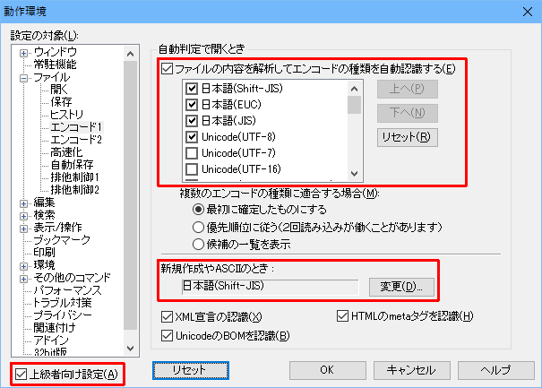

- 秀丸エディタで、テキストファイルの読み込みと終了を繰り返していると、 いつのまにか２バイト系日本語文字が記号やアルファベットに化けてしまって、 読めなくなってしまいました。また、秀丸エディタで、Shift_JIS以外の文字コードを扱う場合に、注意すべき点はありますか？

一般に文字コードの判別に関しては、100%の対応はどんなソフトウェアでも難しいので、最終的には目で見て確認するのがベストです。
標準の Shift_JISコードだけを使っている場合には問題は起きません。 しかし他の文字コードも使っている場合には、上書き保存した時に予期せぬ文字コードに変換されてしまうことがあります。 一見しても見分けられないだけに厄介です(^^;)。
- [補足]
秀丸エディタで自動認識を有効にするには。「その他」→「動作環境」→「ファイル」→「エンコード１」にある、 「ファイルの内容を解析してエンコードの種類を自動認識する」をＯＮにして下さい。
(「エンコード1」が表示されていない場合は、「動作環境」画面左下にある「上級者向け設定」をONにしてください)「上へ」、「下へ」のボタンで、エンコードの優先順を変更可能です。 新規作成時のエンコードを指定する事も可能です。
